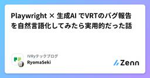
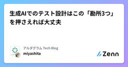

Zennの「QA」のフィード
フィード

Playwright × 生成AI でVRTのバグ報告を自然言語化してみたら実用的だった話 43
43
Zennの「QA」のフィード
こんにちは！IVRyのQAエンジニアの関(@IvryQa)です。IVRyでは2024年12月から Playwright[1] を用いた Visual Regression Testing（以下、VRT）[2] を導入し、約半年間運用してきました。ピクセル差分は拾えても これって本当にバグなのか？ と判断するのに時間がかかったり、マスク設定やしきい値調整など地味なメンテ工数が積み重なっていました。そこで今回、画像を理解できる生成AIを使って差分をバグ報告として自然言語化し、Slackに通知する仕組みを試してみました。同じような悩みを抱えている方の参考になれば嬉しいです！ 概要...
2日前

生成AIでのテスト設計はこの「勘所3つ」を押さえれば大丈夫 3
Zennの「QA」のフィード
はじめにこんにちは！アルダグラムでQAのお手伝いをしているmiyashitaです！最近、QAのシステムテスト設計でもAI使いたいなぁ～と思い、色々と試行錯誤していました。その中で、こんな勘所を持っていたらAIでうまくテスト設計していけるのかも？と感じたところがありましたので、今回はそちらを紹介できればと思います。 使用するツールChatGPT：o4-mini-high 今回やりたいこと仕様書を解析して、テスト観点表を作成してもらう仕様書及びテスト観点表を基に、テストケースを作成してもらう 主な勘所AIをテスト設計で活用するための勘所は、以下の3つです...
3日前
QAチームのDatadog導入奮闘記：品質可視化を実現するまでの全記録
Zennの「QA」のフィード
はじめに：QAエンジニアの新たな挑戦 📝こんにちは！QAエンジニアのAyakaです。今年の4月にQAチームが立ち上がったばかりで、まさにゼロからチームと仕組みを構築している最中です。私たちのチームが最初のミッションとして掲げたのが、サービス品質の可視化でした。開発チームがより能動的にパフォーマンス改善に取り組めるような環境を作りたい障害が起きてから受動的に動くのではなく、その予兆をデータに基づいて捉えたいそんな思いから、Datadogの導入プロジェクトがスタートしました。本記事では、私たちがインフラ監視からAPM、ログ収集、そしてダッシュボード完成に至るまで、数々の...
5日前
【JSTQB解説】第1章：テストの基礎 - ソフトウェアテストの基本概念と7つの原則
Zennの「QA」のフィード
【JSTQB Foundation Level V4.0 完全解説シリーズ】第1章：テストの基礎 この記事についてJSTQB Foundation Level資格を取得した経験と、実際のQA業務で学んだことを基に、シラバスの内容を実践的な視点で解説します。こんな方におすすめです。JSTQB Foundation Level資格の取得を検討しているテスト業務に配属されたばかりQAエンジニア・テストエンジニアに興味がある開発者だがテストについても学びたい記事の内容は以下の通りです。なぜテストが重要なのかテストの7つの基本原則テスト担当者の役割と必要なスキル...
5日前

- AIと創るインタラクティブな体験 - ビットキーは「JaSST’25 Hokkaido」にポスターセッションを出展します！
Zennの「QA」のフィード
はじめにこんにちは。株式会社ビットキー Software QAチームからお知らせです。この度ビットキーは、7/25(金)に開催の「JaSST’25 Hokkaido」にポスターセッションを出展いたします✨前回実施したJaSST’25 Kansaiのポスター企画を、AIの力を使ってさらに進化させました！皆様と一緒に創り上げる新しいブース体験にご期待ください👏🏻この記事では、皆様に楽しんでいただくための企画内容を一足先にご紹介できればと思います！ JaSSTとはJaSST（ジャスト）は、NPO法人ASTER （ソフトウェアテスト技術振興協会）が運営するソフトウェア業界...
11日前
JaSST'25 Niigataの楽しみ方
Zennの「QA」のフィード
暑くてじめじめするのつらすぎ...どうも、じょーです。JaSST Niigataの運営に携わって3年目になるのですが、今年は共同実行委員長を務めさせていただくことになりましたので、委員長らしい仕事をしてみようかなと。JaSSTのこと知らないよって方には少し触れていただき、知ってるよって方には今年のJaSST Niigataに興味を持ってもらえるような内容にできたらと思っています。!※全てのコンテンツが確定しているわけではないので、投稿した内容に変更が生じる可能性があります。あらかじめご了承ください。この記事も適宜更新していきます。*2025/07/22 新規作成 Ja...
11日前
動画をインプットに不具合再現手順を生成AIに書いてもらおう
Zennの「QA」のフィード
こんにちは、SODAでクオリティエンジニアをしているokauchiです。今回は不具合再現手順を生成AIの力を借りて楽に書こうというテーマです。自分が目に届く範囲のチームであればまだ再現手順の確認、レビューをすることが出来ますが、組織全体となった場合、確認が困難になっていきます。その中ではガイドラインを作成することが求められるのですが、ガイドラインを整備しても、解釈違いやどうしても他の業務より劣後されて、メモレベルの記述になってしまうこともありえます。それを防ぐためのアプローチとして有効そうです！ 不具合報告の「ばらつき」が生まれる理由プロダクトの品質保証を担っていると、開発・サ...
12日前
E2E自動テストの実行時間を半分にして開発者体験をアゲた話
Zennの「QA」のフィード
はじめにこんにちは！マイベストのプロダクト開発部 イネーブリングチームでQAエンジニアをしているfukutomiです。最近特に理由もなく金髪にしたのですが、仲のいい同僚や上司から「治安が悪い」「自転車のハンドルめっちゃ曲げて乗ってそう」「ヤンキー（直球）」など絶賛をいただきました。ありがとうございます。さて今回は、リリース前に実行しているE2E自動テストを高速化して開発者体験をアゲた話です。よろしくお願いします。 これまでのE2E自動テストのフロー高速化の話をする前に、これまでのフローがどうなっていたかについて書いていきます。 実行フロー従来の実行フロー すべて直...
16日前
テストを自動化する#3｜Playwrightのサンプルコード | .waitForTimeoutの活用など
Zennの「QA」のフィード
Playwrightでのテスト自動化に使えるJavascriptのサンプルコードです。 今回取り上げている内容!〇秒待機するコード（.waitForTimeout）URLから文字列を取得して、他のURLに埋め込んで開きたい 〇秒待機するコード（.waitForTimeout）〇秒待機する.waitForTimeoutのコードです。実際には、クリックした後画面遷移が完全に完了するまで「〇秒待機して、その後に△△を確認する」 というような形で使用するのが便利かと思います。await page.waitForTimeout(5000); // 5秒待機const ...
16日前
LLM品質Night — Algomatic・PharmaX に学ぶAIプロダクト品質の真髄 — イベントレポート
Zennの「QA」のフィード
こんにちは！DAIJOBU 代表の山中です。今回は 2025 年 7 月 1 日に開催したオフラインイベント「LLM 品質 Night — Algomatic・PharmaX に学ぶ AI プロダクト品質の真髄 —」 のレポートをお届けします！https://connpass.com/event/359656/ ⏰️当日のタイムテーブル 発表内容今回の登壇者と発表資料です。 「良さそう」と「とても良い」の間には 「良さそうだがホンマか」がたくさんある株式会社Algomatic AI/MLエンジニア 宮脇 峻平さん （@catshun_）LLM が生成物を出...
20日前
ホテル受付RAGを作ってみた
Zennの「QA」のフィード
RAGチャットボット開発ガイドこんにちはDAIJOBU技術部のKakedashiです！今回ホテルFAQを想定した小規模のRAGチャットボットを作成してみました！OpenAIとLangChainで、ユーザーの質問に適切な回答を生成しするという仕様になっており、どのように作成したのかを一から解説していきます！ そもそもRAGとは？RAG（Retrieval-Augmented Generation）とは、外部知識を検索（Retrieval）して、言語モデルによる自然な応答の生成（Generation）に活用する手法です。 使用技術Python 3.11+Open...
24日前
AIに任せられるテスト、任せにくいテスト
Zennの「QA」のフィード
生成AIの発達により開発作業がどんどんAIに置き換わっていく中、当然の流れとして品質保証活動＝テストもAIに置き換えていこうという動きが盛んです。他方で、冷静に考えてみると 「これはAIには（現時点では）難しいのではないか？」 というテストも存在はしていると思っています。今回は直近実際に見た案件から「AIに任せられるテスト、任せられないテスト」を考察します。 ✅ 主にAIに任せられる作業現状のAIは文字情報を処理するのが得意です。そのため、現状任せられる作業は以下のようなものになるはずです。仕様やコード、過去チケットの情報整理や要約過去のバグやテストケースの整理・分類コード...
24日前
テスト前の「ぽちぽち会」が開発チームを活性化させた話 〜失敗から生まれた最高の習慣〜
Zennの「QA」のフィード
はじめにこんにちは！グロービスで学習管理システムのQAをやっているカロリーナです。みなさん、受け入れテストが始まってから「あ、これ実装漏れてる...」「この機能、どうやって使うんだっけ？」なんて経験はありませんか？私たちのチームでは、そんな失敗から生まれた「ぽちぽち会」という習慣が、想像以上の効果をもたらしました。今回は、5回の実践を通じて見えてきた「ぽちぽち会」の効果と、簡単に始められる実践方法をご紹介します。 そもそも「ぽちぽち会」って？「ぽちぽち会」は、一般的にはドッグフーディング、お触り会、バグバッシュなどと呼ばれる活動の、私たちのチーム版の呼び名です。開発中...
1ヶ月前
【QA Career Talk After Talk】QAエンジニアの生存戦略 -AI時代におけるスキルセットを考える
Zennの「QA」のフィード
はじめにこんにちは、令和トラベルの miisan です。先日開催された「QA Career Talk vol.5 〜QAエンジニアの生存戦略～」イベントにご参加くださった皆さん、ありがとうございました！また、イベント中はたくさんの質問、Xでの感想などありがとうございました！https://reiwatravel.connpass.com/event/355308/久しぶりの「QA Career Talk」かつ初のハイブリッド開催ということで、楽しく有意義な時間を私も過ごすことができました。イベントはたった1時間という限られた時間でしたので、全ての参加者の気になるポイントにお...
1ヶ月前
Cursor × MagicPod MCPサーバーで、AIレビューの仕組みづくりに挑戦してみた話
Zennの「QA」のフィード
株式会社Hacobu（以下、Hacobu)でQAエンジニアをやっています、かわせです。MagicPod MCPサーバーの活用事例としてAIにテストケースをレビューさせる仕組みづくりをしたお話しを今回紹介できればと思います。 はじめにMagicPodのようなノーコード自動テストツールは、運用が進むほどテストケースの均一化と質をどう担保するかという壁にぶつかります。この点については、導入時にガイドライン・命名規約などのルールを設け、それを運用することで回避できると考えていました。テスト自動化のレールを敷く -MagicPod運用設計の舞台裏しかしガイドラインや規約になじみのないテ...
1ヶ月前
プロセスが腐敗していないか、匂いに敏感になろう
Zennの「QA」のフィード
こんにちは、SODAでクオリティエンジニアをしているokauchiです。ソフトウェア開発において「プロセスの腐敗臭」に気づけるかどうかは、品質の維持・向上に直結する重要な視点です。ここで言う「匂い」とは「なんだかうまくいっていない気がする」「この手順、昔は意味があったけど今は形骸化しているのでは？」という違和感のこと。今回は、プロセスの変化に対して敏感であることの大切さを考えてみたいと思います。 昔は有効だったプロセスが、今もそうとは限らないある課題に対して導入したプロセスが非常に効果を発揮し、定着していくということがあります。たとえば「毎朝の定例ミーティング」や「チェックリスト...
1ヶ月前
QA主催！エンジニアとともに品質文化を育てるテスト勉強会の舞台裏
Zennの「QA」のフィード
こんにちは！atama plusでQAエンジニアをしています、池上です。「エンジニアを巻き込んで品質について考えたいが、どう働きかければ良いかわからない」そんな悩みを抱えるQAエンジニアの方もいらっしゃるのではないでしょうか。この記事では、エンジニアを巻き込んで開催した「テスト勉強会」について、企画の背景から参加者のリアルな声までご紹介します。開発チーム全体で品質向上を目指したい方のヒントになれば幸いです。 1. なぜ「テスト勉強会」を開催したのか？QAチームが大切にしていること本題に入る前にatama plusのQAチームが大切にしていることを紹介させてください。...
1ヶ月前
生成AIをチューニングしたらテスト設計できるかな？
Zennの「QA」のフィード
こんにちは！アルダグラムでQAのお手伝いをしているmiyashitaです！生成AIの活躍が著しい現代、私もQA業務でのAI活用法を模索している日々。。。元々既存のデフォルトAIを活用していたが、どこか精度が上がり切らず頭打ちを感じていたが、最近AIの「チューニング」をすることを思い立ち、少し試してみた。すると、一気にAIの回答精度を上げることができました😎今回はその効果をBefore / Afterでご紹介します。 今回のゴール今回は、テスト観点の出力までに絞ってAIのチューニング効果を検証してみる。 試したAIツール🤖今回はこの2つで検証していく。Google G...
1ヶ月前
MagicPod MCPサーバーを試してみた ─ MCPサーバーならではの体験
Zennの「QA」のフィード
株式会社Hacobu（以下、Hacobu）でQAエンジニアをやっている、かわせです。2025年4月、MagicPodから MagicPod MCPサーバー（ベータ） がリリースされました。GUIベースの操作に加えて、API経由で一括実行の操作やデータ取得ができるようになり、テスト自動化の運用がさらに進化する可能が広がります。リリースから少し間が空いてしまいましたが、社内のQAエンジニアにもAIアシスタント「Cursor」のアカウントが付与されたことをきっかけに、さっそく試してみました。 セットアップ時の注意点：社内セキュリティとの調整CursorとMagicPod MCPサ...
1ヶ月前
ビットキーは「JaSST’25 Kansai」にポスターセッションを出展します！
Zennの「QA」のフィード
はじめにこんにちは。株式会社ビットキー Software QAチームからお知らせです。この度ビットキーは、6/27(金)に開催の「JaSST’25 Kansai」にポスターセッションを出展いたします✨今回は、参加者の皆様と一緒に創り上げるインタラクティブな企画をご用意しました👏🏻この記事では、皆様に楽しんでいただくための企画内容を一足先にご紹介いたします。 JaSSTとはJaSST（ジャスト）は、NPO法人ASTER （ソフトウェアテスト技術振興協会）が運営するソフトウェア業界全体のテスト技術力の向上と普及を目指すソフトウェアテストシンポジウムです。※JaSST：...
1ヶ月前